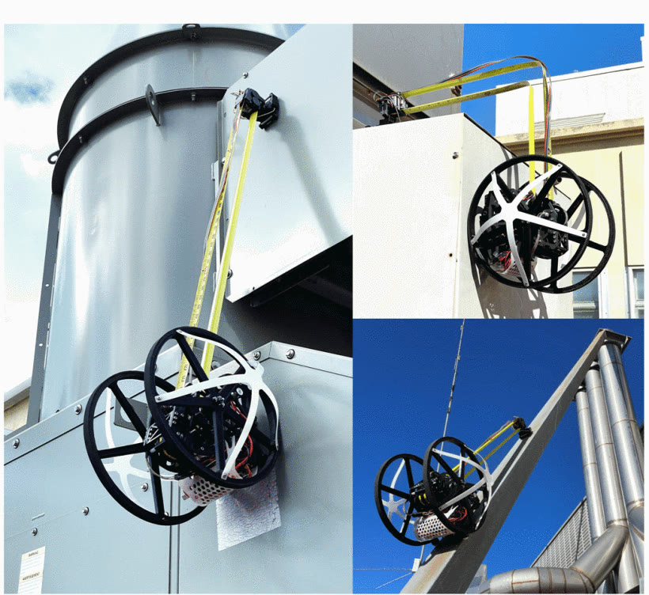
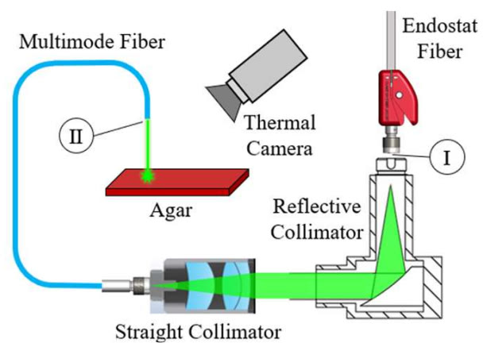

Sep 2026 – Present
TriMI
One manipulation interface for direct demonstration, joint-level haptic teleoperation, and robotic execution.
Research & engineering
From dexterous hands to dynamic humanoids, I work across mechanism design, robotic hardware, and control.
Dexterity, sensing, and human–robot interfaces.
Sep 2026 – Present
One manipulation interface for direct demonstration, joint-level haptic teleoperation, and robotic execution.
Apr 2026 – Jun 2026
A modular, low-impedance, direct-drive hand with integrated tactile sensing for dexterous manipulation.
Dec 2025 – Mar 2026
A wearable dexterous exoskeleton that connects natural hand demonstrations with robot learning.
A mechanically compliant hand that produces massage motions with two actuators and coupled finger linkages.
Dynamic locomotion and integrated robotic systems.
2024–2025
Bringing a movie character to life through mechanical design, torque-controlled walking, and expressive full-body motion.
2023–2024
Collision-aware navigation, dynamic locomotion, and competition deployment for the RoboCup 2024 adult-size humanoid world champions.
Mechanical interfaces for mobility, climbing, and medical instruments.
2023–2024
A reconfigurable delivery robot built around a compact, integrated latching interface.

2023–2024
A lightweight climbing robot with an extending limb and switchable magnetic grippers for steel structures.

2021
Coupling a surgical laser into a thinner optical fiber to enable tighter bending in steerable endoscopic probes.